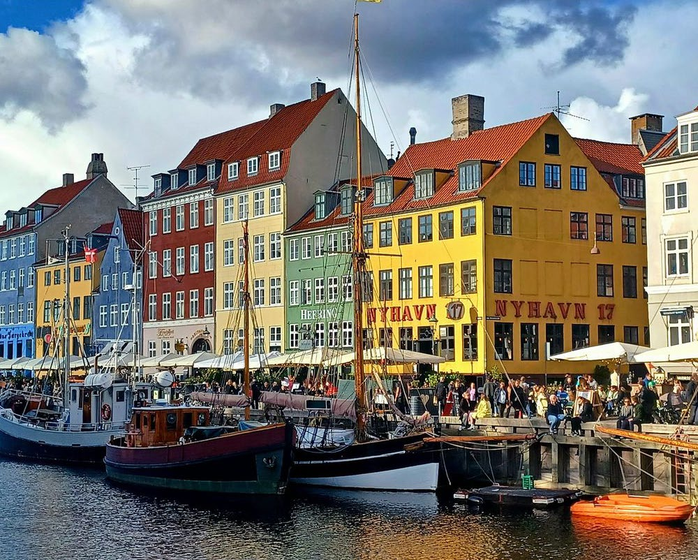

Fakta-ark 19: Danmarks
Áudio
sidde 104
Fakta-ark 19: Danmarks geografi og befolkning
Læremateriale Til Medborgerskabsprøven
sidde 105
Danmark ligger i den nordlige del af Europa. Norge ligger nord for Danmark, og Sverige ligger nordøst for Danmark. Syd for Danmark ligger Tyskland og Polen.
Læremateriale Til Medborgerskabsprøven Fakta-Ark 19: Danmarks Geografi Og Befolkning
Færøerne og Grønland er med i det danske rigsfællesskab*. Færøerne og Grønland regulerer* i høj grad deres samfund selv inden for rammerne af den færøske hjemmestyreordning og den grønlandske selvstyreordning. Færøerne og Grønland har deres egne demokratiske forsamlinger*.
Samtidig er færinger og grønlændere danske statsborgere og vælger repræ sentanter til Folketinget i Danmark. Der vælges to medlemmer på Færøerne og to medlemmer i Grønland.
Dette afsnit handler om: • Danmarks geografi • Danmarks befolkning
Danmarks Geografi
Danmark er geografisk et lille land. Dets areal er kun på lidt mere end 43.000 km2, når man ikke regner Grønland og Færøerne med.
Danmark består af halvøen Jylland og over 400 større og mindre øer. Den største ø er Sjælland. De mange øer betyder, at Danmark har en meget lang kystlinje – omkring 7.300 km.
Det største farvand* omkring Danmark er Nordsøen, som i Danmark også kaldes for Vesterhavet, fordi det ligger vest for Danmark. Nord for Danmark ligger Skagerrak. Sydøst for Skagerrak og nord for Sjælland og Fyn ligger Kattegat.
Farvandet mellem Jylland og Fyn hedder Lillebælt, mens farvandet mellem Fyn og Sjælland hedder Storebælt. Farvandet mellem Sjælland og Sverige hedder Øresund.
Der er mange broer og tunneller i Danmark. Nogle af de vigtigste er:
- Lillebæltsbroerne, der forbinder Jylland og Fyn over farvandet Lillebælt
- Storebæltsforbindelsen, der forbinder Fyn og Sjælland over farvandet Store bælt
- Øresundsforbindelsen, der forbinder Danmark og Sverige over farvandet Øresund
Det nordligste punkt i Danmark kaldes for Grenen, og det ligger nordøst for byen Skagen i Nordjylland. Ved Grenen mødes de to farvande Skagerrak og Kattegat. Det sydligste punkt i Danmark er Gedser Odde på øen Falster. Gedser Odde ligger ud til farvandet Østersøen.
Nyhavn i København. Foto: Tue Schou Pedersen.

sidde 106
Læremateriale Til Medborgerskabsprøven Fakta-Ark 19: Danmarks Geografi Og Befolkning
Nyhavn i København. Foto: Tue Schou Pedersen.
Det vestligste punkt i Danmark er Blåvands Huk i Vestjylland. Blåvands Huk ligger ud til farvandet Nordsøen (Vesterhavet).
Det østligste punkt i Danmark udgøres af øgruppen Ertholmene, som ligger øst for Bornholm i Østersøen.
Danmark er et fladt land uden bjerge. Det højeste naturlige punkt i Danmark hedder Møllehøj og ligger i Østjylland cirka 170 meter over havets overflade. En stor del af landet er dækket* af marker, og nogle steder er der skov. Et af de få steder, hvor der er klipper i Danmark, er på øen Bornholm.
Danmarks Befolkning
Der bor ca. seks millioner mennesker i Danmark. Af dem er cirka en million (17 procent) indvandrere eller efterkommere*. De fleste mennesker bor i byerne. Hovedstaden København er den største by og ligger på Sjælland. I dag bor cirka to millioner mennesker (cirka en tredjedel af Danmarks befolkning) i hovedstadsområdet, det vil sige i selve København og i de kommuner, der ligger omkring København.
Den næststørste by er Aarhus, som ligger i Østjylland. Byen har ca. 300.000 indbyggere. Den tredjestørste by i Danmark er Odense på Fyn med ca. 200.000 indbyggere. Den fjerdestørste by er Aalborg, som ligger i Nordjylland og har ca. 125.000 indbyggere. Og Esbjerg i Vestjylland er den femtestørste by med ca. 75.000 indbyggere.
Fonte: Læremateriale til Medborgerskabsprøven, SIRI.